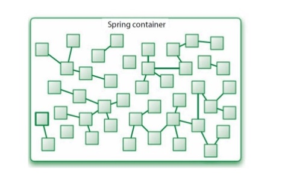

background-image: url(../images/codecamp.png) background-color: #cacaca --- class: center, middle # Dependency Injection --- ## A CD Player App Let's start with the following class, and build a class to "play" the CD ```java public class SgtPeppers { private String title = "Sgt. Pepper's Lonely Hearts Club Band"; private String artist = "The Beatles"; public void play() { System.out.println("Playing " + title + " by " + artist); } } ``` --- ## Class Dependencies A **dependency** of a class is any non-primitive instance variable of the class. -- ```java public class CdPlayer { private SgtPeppers cd; public CdPlayer() { this.cd = new SgtPeppers(); } public void play() { cd.play(); } } ``` -- `CdPlayer` depends on `SgtPeppers` --- ## Tight Coupling In the previous example, we say that `CdPlayer` is **tightly coupled** to the `SgtPeppers` class, since it depends explicitely on the given class. -- A less coupled version would be: ```java public class CdPlayer { private SgtPeppers cd; public CdPlayer(SgtPeppers cd) { this.cd = cd; } public void play() { cd.play(); } } ``` --- ## Loose Coupling We can take this a step further by introducing an interface and reducing the dependency on the concrete class `SgtPeppers` -- ```java public interface CompactDisc { public void play(); } public class SgtPeppers implements CompactDisc { private String title = "Sgt. Pepper's Lonely Hearts Club Band"; private String artist = "The Beatles"; public void play() { System.out.println("Playing " + title + " by " + artist); } } ``` --- ## Loose Coupling via Contructors The refactored `CdPlayer` looks like: ```java public class CdPlayer { private CompactDisc cd; public CdPlayer(SgtPeppers cd) { this.cd = cd; } public void play() { cd.play(); } } ``` --- ## The Program We could now use these classes this way: ```java public static void main(String[] args) { CompactDisc cd = new SgtPeppers(); MediaPlayer player = new CdPlayer(cd); player.play(); } ``` --- ## Loose Coupling via Setters We could also set up the `cd` field using a setter: ```java public class CdPlayer { private CompactDisc cd; public void setCd(CompactDisc cd) { this.cd = cd; } public void play() { cd.play(); } } ``` --- ## The Program The the program looks like this: ```java public static void main(String[] args) { MediaPlayer player = new CdPlayer(); player.setCd(new SgtPeppers()); player.play(); } ``` -- But then _these_ programs are tightly-coupled to the `SgtPeppers` class --- ## Dependency Injection to the Rescue! **Dependency injection (DI)** is a technique that allows application dependencies to be loosened and removed, and managed externally to the main application code. -- It relies on external configuration (via XML or Java configuration classes), and a **container**. -- The container then manages and satisfies dependencies of the application. --- ## DI with Spring Spring provides a DI framework, including a container to manage dependencies -- The container can manage objects and dependencies for us:  Objects managed by the container are referred to as **beans** --- ## Demo: Using DI with Spring [The Soundsystem App](https://github.com/LaunchCodeEducation/soundsystem) ---